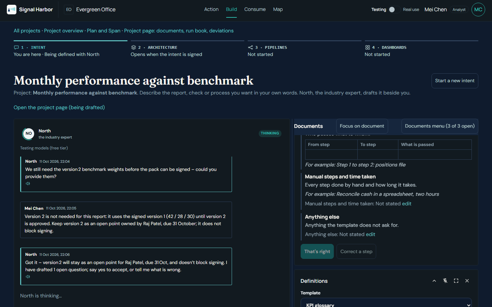
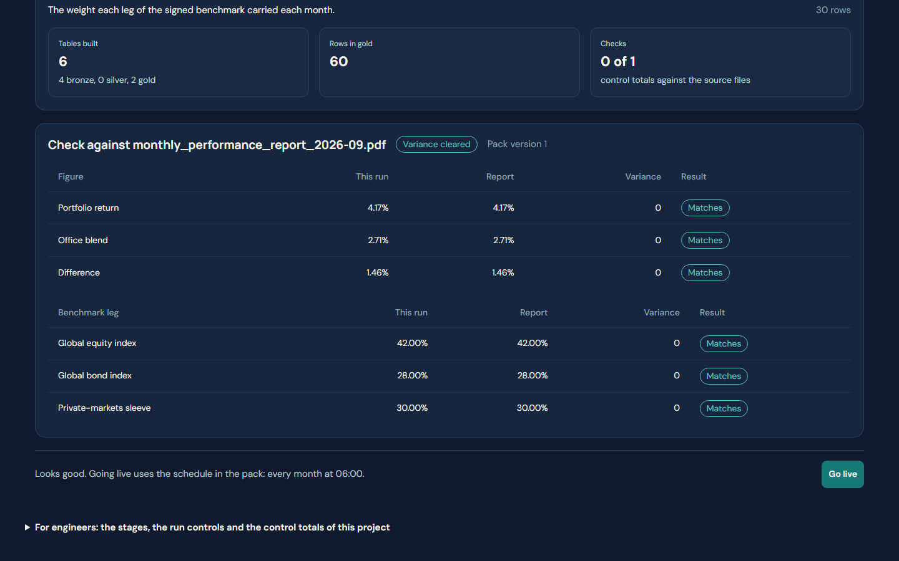
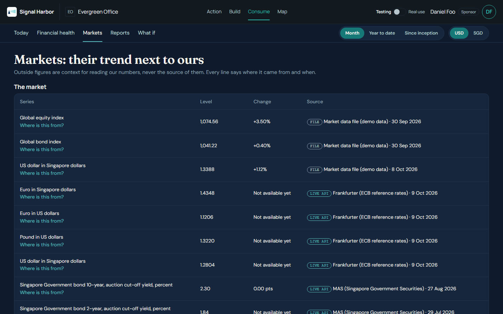
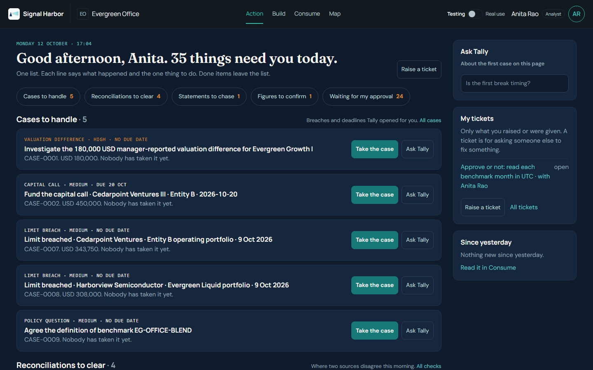
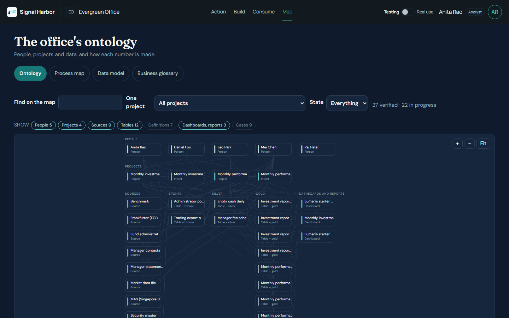
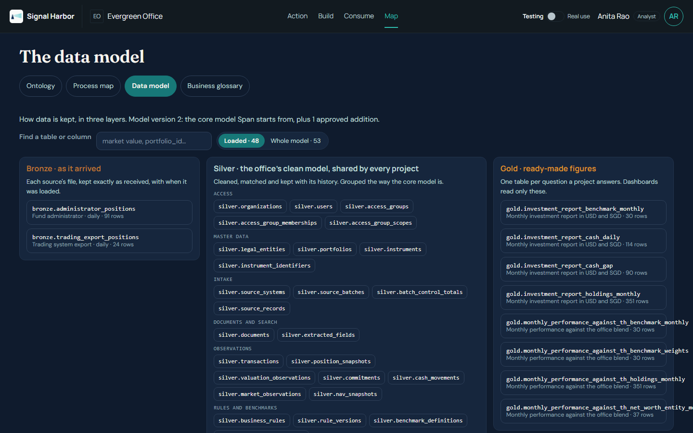
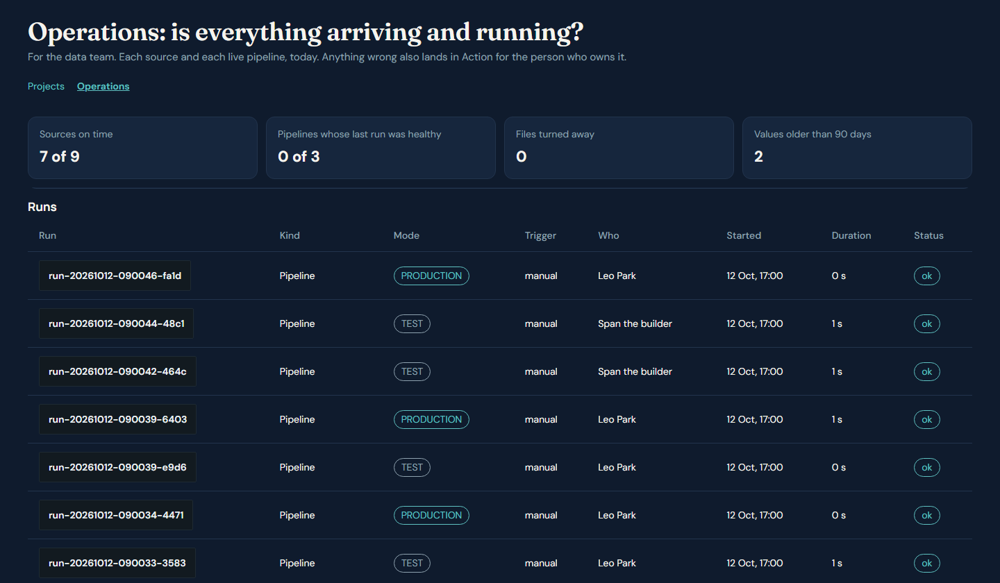

Signal Harbor — every figure, explained
How a monthly number moves from the source file, through a design the head of data approves, to a dashboard, a case and a traceable answer for the family council.
When the council asks “how did we do?”, the answer is in six places.
Manager statements
PDFs, one per fund, arriving at different times.
Administrator export
Month-end positions and values, as a spreadsheet.
Trading file
Trades and cash, on its own daily cycle.
Working spreadsheets
Copied tabs, typed-in formulas, one person’s version.
- Late. The figures arrive after the date the council needs them.
- Revised. A statement is amended after a report has been issued, and nobody is sure which version was used.
- Untraceable. A number cannot be walked back to its file, its row or the person who checked it.
The question is simple. Answering it should take minutes, and every figure should be able to show where it came from.
Four centres for the work, four agents that draft. People sign.
Action
Today’s cases, reconciliations and what waits for a person.
Build
Intent, design pack, pipelines and the dashboard studio.
Consume
Today, financial health, markets, reports and what if, in USD or SGD.
Map
The office’s ontology, data model with impact, process maps and glossary.
North
Listens and drafts the intent of work and the process map.
Span
Architect designs the data. Builder connects, runs and checks it.
Lumen
Proposes a starter dashboard and drafts the briefs.
Tally
Explains a case and answers questions about Action items.
Agents draft and check. A named person approves each step that changes what the council sees.
The business owner says what is needed, in her own words.
- North asks one question at a time and drafts the figures, readers, sources and the process map as the conversation goes.
- The sponsor reads the signed intent and signs it.
- A signed intent is read-only. Changes go in as a new version.
MeasuredIn our walkthrough: about ten minutes of conversation, ten messages from the business owner, one signature.

Intent drafted with North, ready for the sponsor to sign. Evergreen Office, synthetic data.
Span designs the target. The head of data approves it before anything is built.
- Span reads the signed intent and asks only what it does not already know, each with a default to accept.
- It profiles the sample files and drafts a versioned pack: bronze, silver and gold tables, the catalogue, and a mapping sheet from each source field to the figure.
- The head of data approves. Approved means locked for the builder; any change is a new version.
MeasuredWalkthrough pack: two gold tables, five silver tables, 19 mapping rows, four questions answered.

Design pack as drafted by the architect. Approval is a separate step, shown on the next slide.
The builder runs on a copy and checks every line against the report already issued.
Built figures against the issued September report
Portfolio 4.17% vs 4.17% issued
Office blend 2.71% vs 2.71% issued
Difference +1.46 vs 1.46 points
All three legs matched too.
MeasuredThe first run matched the report. Version 2 corrected four definition texts, and the rerun matched again before go-live.

Benchmark check against the report as issued. Source: walkthrough, 11 Oct 2026, synthetic data.
Consume: the morning note, financial health and markets, each line with its source.
- Today. One sentence, four key numbers, and what moved against the benchmark.
- Financial health. Daily P&L and NAV by portfolio, entity or fund, with how far each value can be trusted.
- Markets. Every outside line is tagged FILE or LIVE API, with its source and date.
- Reports hold the library and the dashboards a person approved. What if shows attribution.
- One USD / SGD switch stays set as you move between pages.
A missing input shows as missing. If the daily price file has not arrived, the screen says so instead of showing a number.

Consume, Markets: each outside line carries FILE or LIVE API, its source and its date. Synthetic data.
Action is one page: what needs a person today, and why.
- Cases to handle, with the evidence attached.
- Reconciliations to clear. When Tally reads a break as timing, one click closes it as timing.
- Figures to confirm read from files, and statements to chase.
- Waiting for my approval: packs, plans, dashboards, deliveries and Map items.
- Done today grows as the team clears the list.
Follow-ups to managers are drafted for a person to copy. Nothing is sent by the system.

Action, one page, as the head of data sees it. “Where is this from?” opens the trail on any figure. Synthetic data.
One graph of the office: people, projects, data and how each number is made.

Map, Ontology view. Synthetic data.
- Whole company. People, projects, sources, tables, dashboards and reports, cases and decisions on one graph.
- Zoom and pan. Plus, minus and Fit buttons; ctrl-wheel or pinch zooms at the pointer; drag to pan.
- Narrow it. Find box, one project at a time, state, and Show chips.
- Click a node for its owner, state and what it connects to.
- Switch to Process map, Data model or Business glossary.
See what each number is made of, and what a change to a table would touch.

Data model: every table by layer, with row counts. A picked table lights what it reads and what reads it.
- Pick a table. Columns with meaning, row count, owner and what it reads.
- If this table changes. The gold tables, dashboards, reports and projects that depend on it.
- Loaded or whole model. Tables that hold rows today, or the full model with the rest dimmed.
- Model additions. A new table needs a model change first. The head of data approves it, and it then joins the model, outlined as added for this office.
The data team sees every layer. Everyone else sees only the gold tables of projects they may see.
Is everything arriving and running? Sources, runs and deliveries on one page.
- Sources. Each source, who owns it, when it last arrived and whether it is late.
- Live pipelines. Each pipeline that has gone live, and whether its last run was healthy.
- Runs. Every run has a run ID, a TEST or PRODUCTION badge and its steps.
- Deliveries. The email and Slack previews and what is waiting to go out.
Anything wrong also lands in Action for the person who owns it. Operations sits under Build, next to Projects.

Operations: tiles, then Runs with run IDs and TEST or PRODUCTION badges. Sources, live pipelines and deliveries are on the same page. Synthetic data.
Four public sources, Singapore included, on the same controls as the files.
| Source | What it gives | Key |
|---|---|---|
| Frankfurter ECB reference rates | USD/SGD, EUR/USD, EUR/SGD, GBP/USD | None |
| FRED US Federal Reserve data | US 10- and 2-year Treasury yields, SGD per USD, Singapore CPI inflation | Free key |
| Finnhub | ETF quotes (ACWI, AGG, EWS) and market news | Free key, sent in a header |
| MAS Monetary Authority of Singapore | Singapore Government Securities auction yields, 2 to 30 years | None |
SGS yields are the yield at the last auction of each tenor, not a daily curve. EWS stands in for the licensed Straits Times Index. SORA is not connected yet: it needs a MAS API key registration.
How a connection works
- Choose the source and series, then Test: you see real rows and the time it took.
- Save, and the daily pull runs. Fetch now is on the Connectors page.
- The host is fixed on an allowlist. Every call goes through the egress gateway.
- Keys are read from the environment, never shown on screen or in the address.
- Each series is tagged LIVE API with its source and date on Consume.
Every run has an ID, and every gold figure walks back to its file.
A run ID on every run
- An ID like run-20261012-131500-ab12, with who started it and what triggered it: manual, schedule, file arrived or connector.
- TEST runs are on a copy. PRODUCTION runs are live.
- Covers pipeline runs, file loads, connector pulls and reconciliations, each with its steps.
What governance can answer
- Which run built this figure, and when?
- Which file and batch did it come from?
- Who started the run, and was it a test?
The run ID is on gold tables today. The bronze load ID on the market-data loader, and the run ID on the silver tables, are still being joined up.
Each person sees what their role needs. The maker never approves their own work.
| Role (in the demo) | What they see and do | What they sign or approve |
|---|---|---|
| Sponsor Daniel Foo, CIO | Action, Build (their own intent), Consume, Map (read only). Decides what the office needs. | Signs the intent. Approves the dashboard and each delivery channel. |
| Business owner Mei Chen, Operations | Talks to North, reads Consume and Map, acts on her Action items. Not the data team. | Sends work for approval. Never approves her own. |
| Approver Raj Patel, Finance | Action, Consume, Map. Clears cases and confirms figures. | Approves what is sent to him, never his own work. |
| Head of data Anita Rao | Owns the data design and the data approvals in Action. | Approves the design pack, the build plan, verified Map items and model changes. |
| Data engineer Leo Park | Operations, Pipelines and Connect an API. Confirms sources and takes the pipeline live. | Confirms the sources. Presses Go live. |
| Administrator Grace Ong | Access and every setting. | Gives people access to each centre. |
Settings follow the role: three items for the sponsor and the business owner, seven for the head of data, eight for the data engineer, sixteen for the administrator. Operations and the full data model are for the data team; everyone else sees the gold tables of their own projects.
One application, one exit, one data plane for each company.
Deployment: one service, one persistent volume per company, a health check. Demo platform today; the office’s own cloud is a rollout option.
The office’s data stays in its own space. Every figure traces to a file and a person.
- Data stays in the office’s space. Each company has its own data plane and volume.
- One way out. The egress gateway is the only route to any outside service.
- Names are masked before text leaves the office. Raw rows never leave.
- Every figure traces to its file, row and person through “Where is this from?”.
- Approvals by a different person. Maker and checker differ. Approved is locked.
- Text in files is data, never instructions. Agents cannot approve or send.
Demo data is synthetic. Production controls (keys, roles, retention) are set per office during rollout.
One monthly report: measured in our walkthrough, against a typical manual month.
| What | Measured in our walkthrough | Typical manual month-end |
|---|---|---|
| Time to a delivered report | MeasuredAbout 45 minutes, first words to delivery live, of which about 10 minutes was the conversation. | EstimatedTypically two working days of spreadsheet work, to be validated with your team. |
| People involved | MeasuredFour people, each acting at their own points. Agents ran and checked between them. | EstimatedAn analyst and a reviewer, plus time chasing statements. To be validated. |
| Model cost | MeasuredAbout USD 0.01 for the whole run (test mode, 26 model calls). | EstimatedNo model cost; the cost is staff time. |
Not included in the 45 minutes: waiting for managers to send statements, and any real corrections found later. The manual figures are typical, not measured in your office.
Start with one use case in two to four weeks, then add the next.
1 · Choose
One use case with an owner. Proposed: the monthly portfolio against its benchmark.
2 · Prove
Build on synthetic or pilot files. Check every line against a report already issued.
3 · Run alongside
One real month-end in parallel with the current process. Head of data signs off.
4 · Extend
Add the next use case on the same design and approvals, one at a time.
- Pilot data first. Synthetic or pilot files until the pack is approved.
- Hosting. The demo platform today; your own cloud when the pilot ends.
- Success is measured. The pilot report must tie to the issued figures line by line.
- Timing. Two to four weeks to the first parallel run, depending on file access.
Six decisions to start the pilot.
- One use case and one owner for the pilot.
- Sample files for each source, or confirmation of the list in the intent.
- A head of data who approves the design pack and the plan.
- An access list: who signs, who reads, who approves.
- Hosting choice: the demo platform for the pilot, or your cloud.
- The success line: the pilot report ties to the issued figures.
Next step: a working session with the owner, the head of data and the business reader, within the week.
Questions and discussion
Every figure in this session came from synthetic Evergreen Office data. The same trail works on your data once the pilot starts.